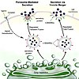

secretion

Definition: Secretion is the movement of material from one point to another, such as a secreted chemical substance from a cell or gland. In contrast, excretion is the removal of certain substances or waste products from a cell or organism. The classical mechanism of cell secretion is via secretory portals at the plasma membrane called porosomes. Porosomes are permanent cup-shaped lipoprotein structures embedded in the cell membrane, where secretory vesicles transiently dock and fuse to release intra-vesicular contents from the cell.
Source: Wikipedia
Wikipedia Page (Something wrong with this association? Let us know.)
Wikidata Page (Something wrong with this association? Let us know.)